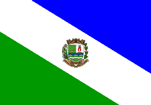

Tremembé - Geodex

Município de Tremembé
-
Populacão: 48.228 pessoas
-
Área: 191,094km²
-
Fundação: Ano de 1660
-
Distância da Capital: 138km
Jacques Felix, um dos desbravadores do Brasil Colônia em busca de ouro, fundou o povoado de Tremembé em suas terras, o Sítio Tremembé, que abrigou diversos povoados. Em 1660, o Capitão Mor Manuel Costa Cabral fundou Tremembé e construiu uma capela dedicada a Nossa Senhora da Conceição, que se tornou a padroeira da freguesia. A capela recebeu a imagem do Senhor Bom Jesus e atraiu peregrinos, levando ao estabelecimento de um pequeno povoado. Em 1907, foi criada a Paróquia do Senhor Bom Jesus de Tremembé e a igreja foi elevada a Santuário Arquiepiscopal, recebendo posteriormente o título de Basílica Menor em 1974, concedido pelo Papa Paulo VI.